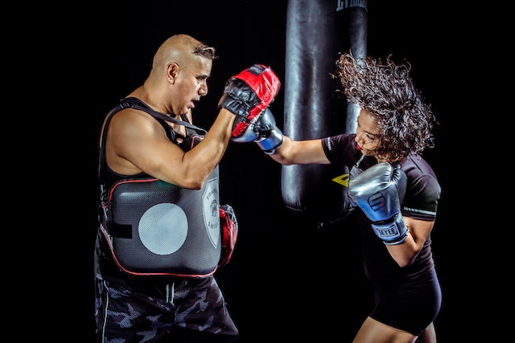
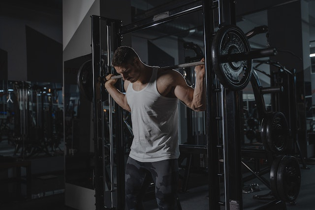
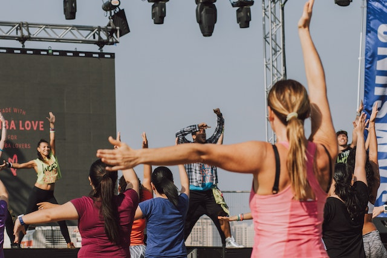
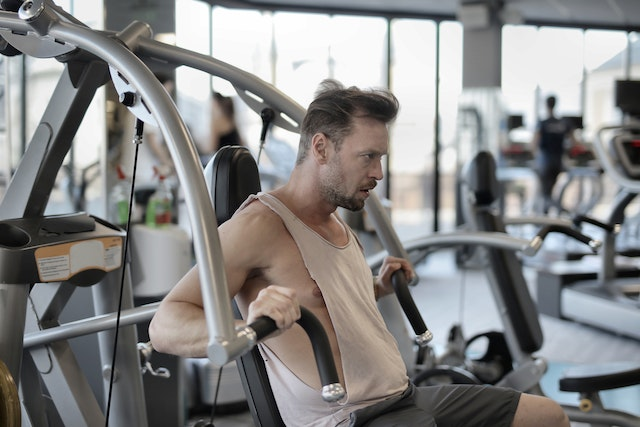
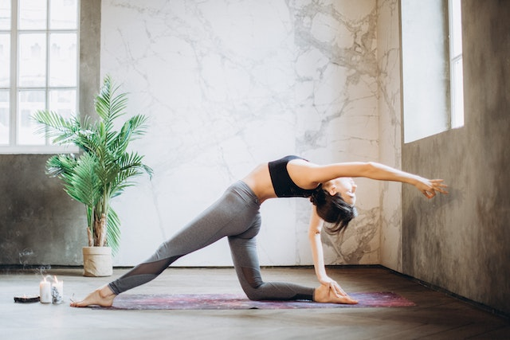
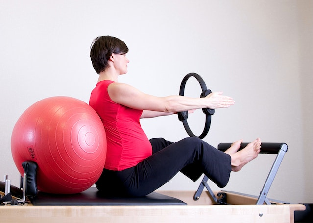

Our Fitness Classes

We are open 24:7. YOU can now train any time you like, weekdays, weekends & public holidays. Unlike other so called 24:7 gyms, we are staffed all the time. If you need a late night workout, a protein bar or shake, supplements or a cool t-shirt, we are open for you. The range of group fitness classes provided by ML Strength is listed below.
Body Attack
Classes every week on Monday

Body Attack is a commercial group-fitness sports inspired cardio workout program including some sports-derived movements, aimed primarily at developing cardiovascular fitness. The program is created and distributed by Les Mills International. There is a release with new music and movements every three months.
Zumba
Classes every week on Tuesday

Zumba is a cardio-based workout that also incorporates dancing moves with Latin influences. Beto Pérez, a dancer and choreographer from Colombia, started it in 2001; by 2012, it had 110,000 sites and 12 million weekly students. The trademark Zumba belongs to Zumba Fitness, LLC.
Body Pump
Classes every week on Wednesday

Body Pump is a fast-paced, barbell-based workout that's specifically designed to help you get lean, toned and fit. It uses a combination of motivating music, fantastic instructors and scientifically proven moves to help you achieve these targets more quickly than you would working out on your own.
Body Step
Classes every week on Thursday
Body Step is a fun pre-choreographed full body cardio workout, using a step to help tone your thighs. Your bubbly and approachable instructor will coach you through the workout, with motivating hit music and a whole lot of fun! Leave this class buzzing with satisfaction.
Yoga
Classes every week on Friday

Yoga cultivates health and wellbeing (physical, emotional, mental and social) through the regular practice of a range of many different techniques, including postures and movement, breath awareness and breathing exercises, relaxation and concentration, self-inquiry and meditation.
Pilates
Classes every week on Saturday

Pilates is a form of exercise which concentrates on strengthening the body with an emphasis on core strength. This helps to improve general fitness and overall well-being. Similar to Yoga, Pilates concentrates on posture, balance and flexibility.